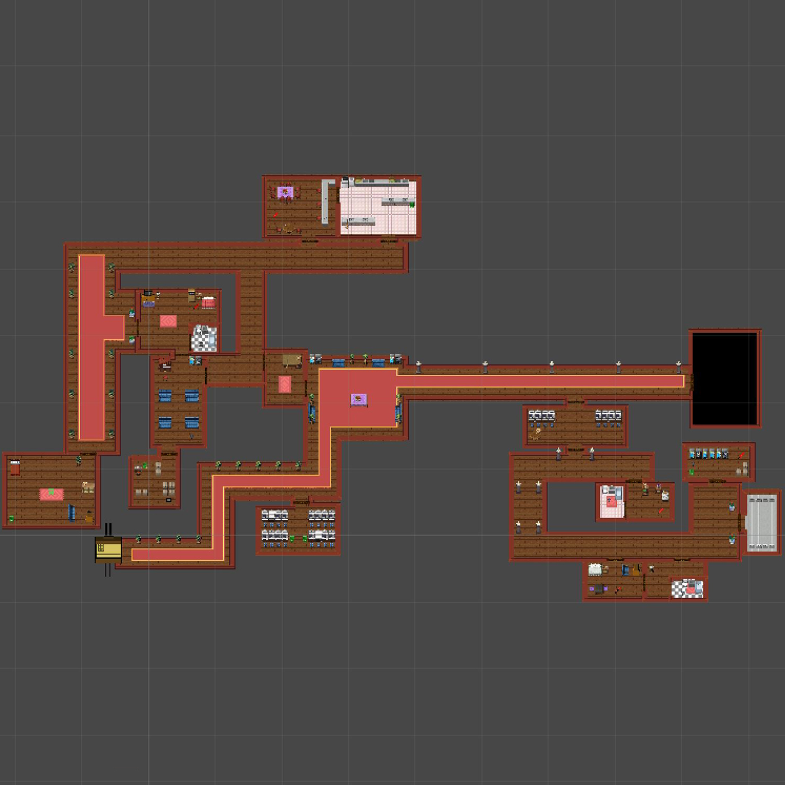

Nivel 3
Partidas recopiladas hasta ahora:
Dificultad y equilibrado
- Promedio de muertes por jugador:
- Porcentaje de flashes gastados por jugador:
- Mapa de calor de muertes:

- Muertes promedio por flashes empleados:
Equilibrado del sistema de puntuación
- Puntuación promedio de jugadores:
- Porcentaje de objetos recogidos por jugadores:
- Tiempo promedio en completar el nivel:
- Relación de tiempo empleado por puntuación final del nivel:
- Relación de objetos recogidos por puntuación final del nivel:
IA enemiga
- Promedio de detecciones por guardias:
- Promedio de guardias flasheados por nivel:
Diseño del nivel
- Porcentaje de cámaras desactivadas:
- Promedio de detecciones por cámaras:
- Porcentaje de carretes recogidos:
- Porcentaje de flashes recogidos:
- Tiempo promedio en encontrar al famoso objetivo
- Mapa de calor promedio de posiciones de jugadores:
Interfaz y usabilidad
- Promedio de fotos utilizadas contra guardias:
- Promedio fallos durante el minijuego: